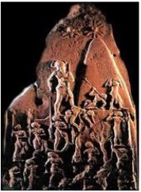

was a shadow of what it had been centuries earlier: many cities had been abandoned, others had shrunk in size, and the total settled population was probably not much more than a hundred thousand. Settlement was concentrated in cities along the coastal plain and along major trade routes. The central and northern hill country which would later become the biblical kingdom of Israel was only sparsely inhabited, and Jerusalem was a Canaanite city-state recognizing Egyptian suzerainty. Politically and culturally, Egypt was dominant; each Canaanite city had its own ruler, but was often at odds with its neighbors, appealing to Egypt to adjudicate differences. The city-state system broke down during the Late Bronze Age, and Canaanite culture was then gradually absorbed into that of the Philistines, Phoenicians and Israelites. The process was gradual and a strong Egyptian presence continued into the 12th century BCE.

Archeological Periods in Canaan
Stone Age: c. 8500-4300 BC
Copper Age: 4300-3300 BC
Bronze Age: 3300-1200 BC
Early Bronze Age = 3300-2300 BC
Middle Bronze Age = 2300-1550 BC
Late Bronze Age = 1550-1200 BC
Iron Age: 1200-586 BC
Babylonian Period: 586-539 BC
Persian Period: 539-332 BC
Hellenistic Period: 332-63 BC
Roman Period: 63 BC-324 AD